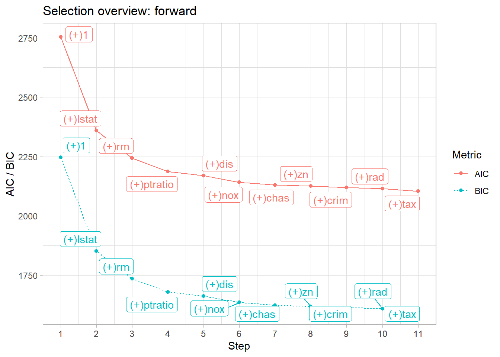
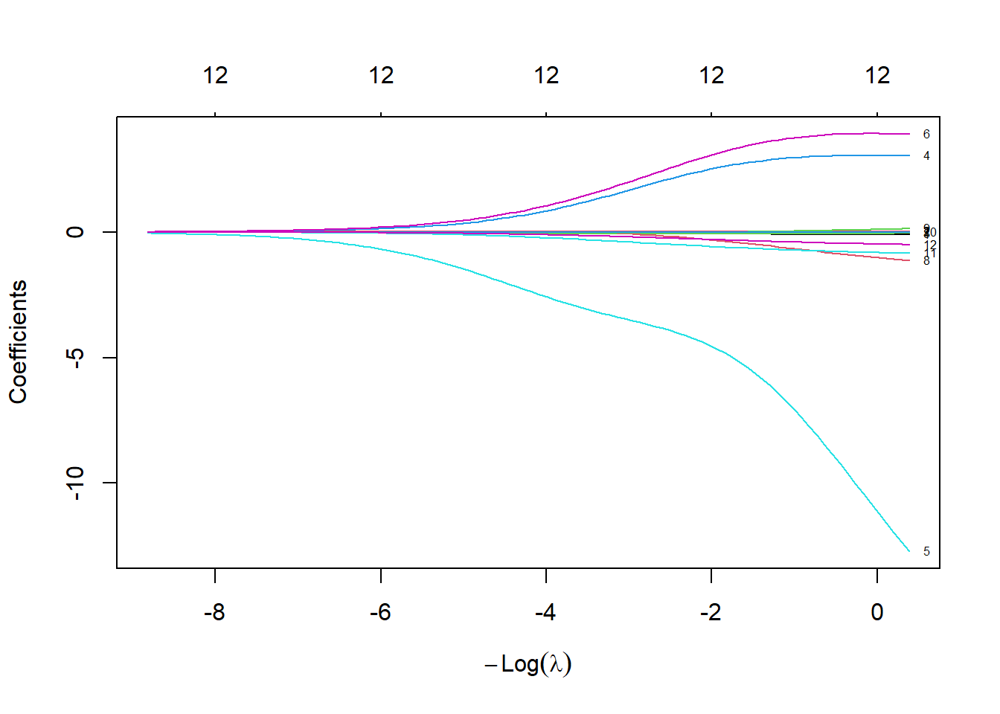
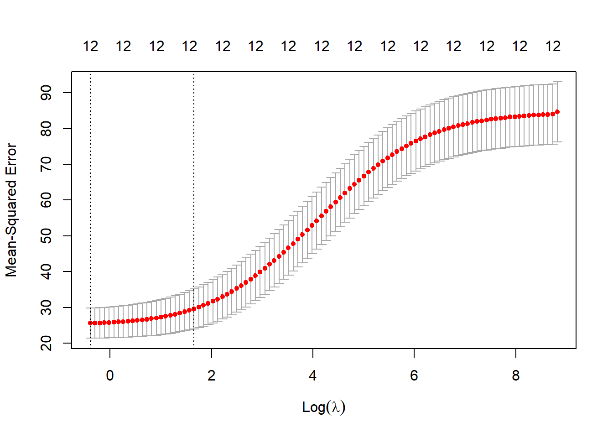
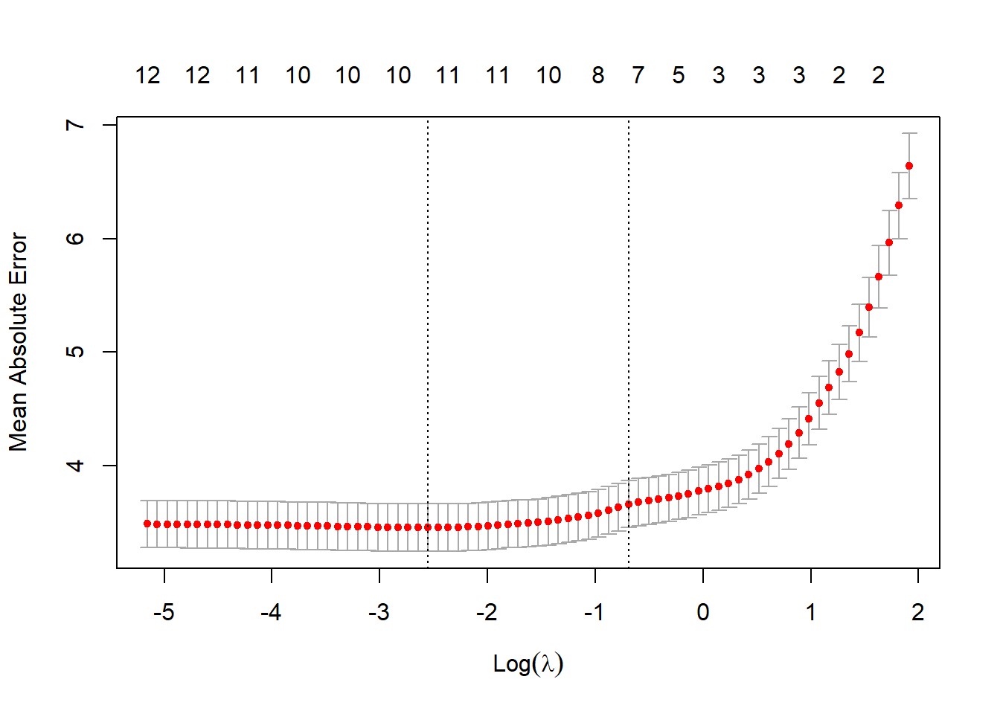

Cuando en un problema de regresión se dispone de un elevado número de variables explicativas es posible que algunas de ellas no estén correlacionadas con la variable respuesta o su relación no resulte estadísticamente significativa. También puede existir el problema de la colinealidad, con una o varias variables explicativas que contienen información redundante respecto a otras variables explicativas. En estos casos, es deseable encontrar un subconjunto de variables que expliquen suficientemente bien la respuesta, o que generen mejores predicciones que el modelo completo. Estos hechos justifican la necesidad de realizar una selección apropiada de variables.
La tarea de generar y evaluar todos los modelos posibles que combinan subconjuntos de variables puede ser, sin duda, ingente. Siendo \(k\) el número de variables, el número de modelos posibles es \(2^k\). Por ello, en la práctica se recurre a seleccionar un conjunto reducido de modelos candidatos, entre los cuales se elige el “mejor”. Esta elección puede basarse en los enfoques explicativo o predictivo, como se ha mencionado, aunque el más habitual es el enfoque predictivo, que será en el que nos centraremos. Es por ello, que aquí no se prestará atención al análisis de residuos para validar el modelo, dado que la validación vendrá dada por la calidad de las predicciones que realice el modelo obtenido.
Esta selección de variables es especialmente útil cuando el número de variables es mayor que el número de observaciones (\(k > n\)), situación común en algunos campos científicos, como la genómica, el tratamiento de imágenes médicas, etc. Es más, con más variables que observaciones es imposible estimar de forma única todos los parámetros del modelo completo.
Dos buenas referencias para este capítulo son Durbán (2024) y James et al. (2013).
5.1 Métodos de selección
Se han desarrollado distintos procedimientos de selección, automática, de variables explicativas, que permitan obtener un modelo de regresión óptimo (desde alguna perspectiva).
Uno de los métodos más utilizados, por su simplicidad y eficacia, es la regresión paso a paso (stepwise regression). Este método permite construir el modelo de forma progresiva, evaluando el impacto de cada variable. Se basa en añadir, o eliminar, al modelo variables explicativas en función de su contribución estadística al modelo, evaluada mediante algún criterio (que veremos en el siguiente apartado). Este método surge como una alternativa computacionalmente menos costosa al método de selección del mejor subconjunto (Best Subset Selection). Este último método evalúa (exhaustivamente) todas los combinaciones posibles de modelos con un número fijo de variables (por ejemplo, todos los modelos con 4 variables, que serían \({k \choose 4}\), o con 5 variables \({k \choose 5}\), etc., de las \(k\) variables disponibles).
Otro conjunto de métodos, muy utilizados en “Machine Learning”, son los métodos de regularización, que consisten en penalizar la complejidad del modelo para evitar el sobreajuste, es decir, reducen el impacto de las variables menos relevantes. Entre ellos veremos la Ridge Regression y Lasso.
Los métodos anteriores se suelen combinar con un procedimiento muy difundido y utilizado en “Machine Learning”, el método de validación cruzada. Consiste en evaluar los modelos con diferentes subconjuntos de variables mediante técnicas como k-fold cross-validation. Para la elección del mejor modelo se utiliza el enfoque de predicción, acudiendo a la minimización del error de predicción en un subconjunto de los datos previamente reservados, no usados para el ajuste, para el que se usa el resto de los datos (enfoque de datos de entrenamiento y datos de validación).
Otra opción muy habitual es reducir la dimensión del problema, la dimesión de las variables explicativas. No es estrictamente un método de selección, sino que el objetivo es proyectar las \(k\) variables explicativas en un subespacio de dimensión más pequeña (mediante componentes principales: combinaciones lineales de las variables explicativas originales).
Por último hay que mencionar los métodos basados en árboles. Pertenecen a este grupo las técnicas de Árboles de decisión, Random Forests, y Gradient Boosting, entre otros. Hay que comentar que estos no son métodos de regresión lineal, aunque ayudan a identificar variables relevantes, pues suelen proporcionar medidas de la importancia de las variables, lo que permite al usuario elegir qué variables seleccionar.
De todos los mencionados, nos centraremos en los 3 primeros grupos.
La selección automática con cualquiera de estos procedimientos debe estar sujeta al contexto y a la lógica del problema. Que el procedimiento lleve a que una variable influye significativamente en la respuesta, pero que no tenga sentido práctico puede deberse a la realización de numerosos contrastes de significación, donde, a base de intentos, se obtienen más contrastes significativos de los reales, por ejemplo, al 5% de significación se rechazan (en media) 5 de cada 100 contrastes.
5.2 Criterios de selección
Para elegir qué modelo es “mejor” de entre los candidatos, se acude a criterios de selección, que generalmente pueden estar basados, bien, en la bondad del ajuste del modelo a los datos (tienden a escoger modelos sobreajustados, con más parámetros de los necesarios); o bien, en la capacidad predictiva del modelo. En la práctica se utilizan los segundos, y principalmente:
AIC (Akaike Information Criterion)
BIC (Bayesian Information Criterion)
C\(_p\) de Mallows
Estos 3 criterios (y otros) se pueden expresarse en una forma general que reflejan un balance entre la bondad de ajuste del modelo y su complejidad (basada en el número de parámetros). Concretamente:
\[\text{Criterio} = n \cdot \ln(\hat{\sigma}^2) + \lambda(p)\]
Donde:
\(n\): número de observaciones
\(\hat{\sigma}^2\): estimación MV de la varianza residual del modelo completo
\(\lambda(p)\): penalización por complejidad del modelo, que depende de \(p\), el número de parámetros a estimar (incluyendo la constante), y que varía según el criterio:
Para AIC: \(\lambda(p) = 2p\)
Para BIC: \(\lambda(p) = \ln(n)p\)
Para C\(_p\): se reestructura como penalización sobre \(\text{RSS}_p\), la suma de cuadrados de los residuos del modelo con \(p\) parámetros: \[C_p = \frac{\text{RSS}_p}{\hat{\sigma}^2} - n + 2p\]
Una deducción muy detallada del estadístico C\(_p\) de Mallows puede encontrarse en Peña (2002) (apartado 11.3.2 y Apéndice 11A). Donde se demuestra que el criterio de minimizar C\(_p\) es equivalente al criterio AIC.
Con la penalización basada en el número de parámetros se busca combatir modelos sobreajustados. El criterio BIC penaliza más la complejidad que AIC cuando el tamaño muestral es “grande” (basta \(n>7\) dado que \(\ln(8) > 2\)), por lo que BIC es un método más parsimonioso, tiende a proporcionar modelos más simples (más cuanto mayor sea \(n\)).
Estos criterios son medidas relativas, se utilizan para comparaciones entre modelos, que podrían ser todos “malos”. El modelo preferido será el que tenga menor valor del criterio.
¡Ojo! Los criterios mencionados no permiten una comparación válida entre modelos cuya variable respuesta difiere.
También existen otros criterios basados en medidas de bondad del ajuste del modelo, tales como el coeficiente de determinación (R\(^2\)), su versión corregida (R\(^2\) ajustado) o la varianza residual. Sin embargo, estos criterios únicamente permiten comparaciones, en igualdad de condiciones, entre modelos que poseen el mismo número de parámetros, por lo que su uso debe realizarse con cautela.
5.3 Selección paso a paso
El método de regresión paso a paso tiene dos variantes:
Selección hacia adelante (forward): se parte del modelo nulo —que solo incluye la constante, sin variables explicativas— y se van incorporando variables explicativas, una a una. En cada paso la que más “mejore” el modelo previo y hasta, o bien un modelo maximal propuesto (con aquellas variables que se consideren oportunas), o bien el modelo completo (que incluye todas las variables).
En formato algoritmo
Siendo \(k\) el número máximo de variables a considerar, bien sea del modelo maximal o del completo.
Paso 1. Sea \(M_0\) el modelo nulo.
Paso 2. Para \(i = 0, 1, \dots, k - 1\) , de los \(k - i\) modelos que se obtienen al añadir una variable explicativa adicional a las ya incluidas en \(M_i\), seleccionamos el mejor, y lo denotamos por \(M_{i+1}\).
Aquí “mejor” es el modelo que produce el mayor incremento de variabilidad explicada, \(R^2\), al añadir sólo una de las variables que todavía no han entrado al modelo.
En las salidas de software se puede reconocer dicha variable como la de mayor valor del estadístico \(t\) (de las restantes variables).
Paso 3. El proceso finaliza escogiendo uno de los \(k\) modelos (\(M_0, \ldots, M_k\)) según uno de los criterios mencionados: AIC, BIC, etc.
La ventaja computacional es que el número de modelos a evaluar, \(1 + \frac{k(k + 1)}{2}\), es menor que en la selección del mejor subconjunto, \(2^k\), cuanto mayor es el número de variables disponibles. Pero tiene una desventaja, no garantiza el mejor modelo posible de todos (por ejemplo, si existe multicolinealidad).
Selección hacia atrás (backward): se parte del modelo maximal (o el modelo completo), y se van eliminando, una a una, la variable que menos pérdida supongan para el modelo. La de menor valor del estadístico \(t\) asociado (que no sea significativa). El proceso finaliza eligiendo de entre los \(k\) modelos, el de menor AIC, o BIC,… etc.
Como la selección hacia adelante evaluará \(1 + \frac{k(k + 1)}{2}\) modelos (ventaja computacional frente a otros métodos), pero no garantiza encontrar el mejor modelo. Además, se añade la limitación (que puede ser importante) de necesitar un número de observaciones mayor que el número de variables \(n>k\), de modo que el modelo completo (o, en su caso, el maximal considerado) pueda ajustarse. En contraste, la selección hacia adelante sí puede utilizarse incluso cuando \(n < p\), lo que le otorga una ventaja competitiva, pues le convierte en el único método viable cuando \(k\) es muy grande.
Algunos paquetes de software incluyen también la selección bidireccional, combinación de ambos enfoques, permitiendo tanto la inclusión como la eliminación de variables en cada iteración, según su contribución al modelo. Obviamente es el procedimiento más flexible y suele ofrecer mejores resultados en la práctica.
5.4 Selección por regularización
Los métodos de selección basados en regularización (denominados en inglés Shrinkage -contracción-) se basan en modificar el procedimiento de estimación de mínimos cuadrados de los parámetros añadiendo un término de penalización sobre la magnitud de los parámetros. Los parámetros estimados se reducen/contraen hacia cero (“regularizan”) en comparación con las estimaciones por mínimos cuadrados, provocando una disminución en la varianza de los parámetros estimados del modelo. Buscan así, mejorar la capacidad predictiva del modelo y controlar el sobreajuste de los mismos. Por contra, pueden no seleccionar las variables de forma explícita como los métodos anteriores. Eso sí, en contextos de alta dimensión (\(k >n\)) no se puede aplicar directamente mínimos cuadrados porque la matriz de diseño no tiene rango completo.
En este capítulo vamos a ver los dos más importantes: Regresión Ridge y Regresión Lasso.
Regresión Ridge
En este método se añade el término de penalización, suma de los cuadrados de los parámetros (es decir aplica una norma \(L^2\)). Puede no llegar a relizar una selección efectiva de variables, es decir, no llegar a eliminar las variables menos relevantes, pero reduce su impacto (al reducir las estimaciones de los parámetros).
Su objetivo es minimizar la siguiente función: \[\text{RSS} + \lambda \sum_{j=1}^{k} \beta_j^2 = \sum_{i=1}^{n} \left( y_i - \beta_0 - \sum_{j=1}^{k} \beta_j x_{ij} \right)^2 + \lambda \sum_{j=1}^{k} \beta_j^2\]
donde - RSS es la suma de cuadrados de los residuos, - \(\lambda\) es el parámetro de penalización, un parámetro ajustable/ elegible, que controla la intensidad de la penalización. Si \(\lambda = 0\) no hay penalización y los estimadores son los de mínimos cuadrados. - \(\beta_j\) son los parámetros del modelo.
A la vista de la fórmula, el procedimiento no es invariante a la escala de los predictores, a diferencia del estimador de mínimos cuadrados ordinarios. Por ello, se recomienda estandarizar las variables para aplicar regresión Ridge.
Lasso
El método Lasso (Least Absolute Shrinkage and Selection Operator) penaliza mediante la suma de los valores absolutos de los parámetros (es decir considera una norma \(L_1\)): \[\text{RSS} + \lambda \sum_{j=1}^{k} |\beta_j| \] Tiene la propiedad de forzar algunos parámetros a ser exactamente cero, cuando el parámetro \(\lambda\) es suficientemente grande, lo que implica una selección de variables efectiva, mejorando la predicción, y aumentando la interpretabilidad del modelo.
Comparativa
Aunque ninguno de los dos métodos domina universalmente al otro, en determinados contextos se prefiere uno u otro. La regresión lasso es preferible cuando se espera que únicamente un pequeño subconjunto de predictores sea relevante, mientras que la regresión ridge es útil cuando todos los predictores (o la mayoría) contribuyen. Así, Ridge permite, “colateralmente”, ayudar con el problema de la colinealidad de variables explicativas, regularizando sus estimaciones.
Elección de \(\lambda\)
La eficacia de la selección mediante Ridge o Lasso depende de la elección adecuada del parámetro \(\lambda\). En la práctica se utiliza validación cruzada para determinar el valor óptimo que minimiza el error de predicción.
Interpretación geométrica
Como penalizaciones de tipo norma \(L^2\) o norma \(L_1\), se tiene una interpretación geométrica de las restricciones que se imponen. Para Ridge, la restricción es una región esférica, mientras que para Lasso es una región en forma de rombo, favoreciendo soluciones sparse (dispersas). Una explicación detallada y la correspondiente figura ilustrativa (que se incluye abajo) se pueden encontrar, tanto en James et al. (2013), como en Durbán (2024).
Otros métodos de regularización
Por no extendermos más, no entraremos en otros métodos de regularización. El lector interesado puede buscar información sobre Elastic Net (que es una combinación lineal de Ridge y Lasso, especialmente útil cuando se sabe que hay muchas variables correlacionadas), Adaptive Lasso, Group Lasso, etc.
5.5 Selección por validación cruzada.
El procedimiento de selección de variables por validación cruzada (cross-validation) es una técnica de remuestreo ampliamente utilizada en “Machine Learning”, con un claro enfoque predictivo de los modelos, en lugar de explicativo (como se ha visto en el capítulo anterior). Su objetivo principal es evaluar la capacidad de generalización de un modelo, es decir, cómo se comporta al predecir datos no utilizados durante el ajuste.
La idea básica consiste en particionar (aleatoriamente) el conjunto de datos en dos subconjuntos disjuntos: uno para el entrenamiento (train), donde se ajusta el modelo, y otro para la validación (test), donde se evalúa su rendimiento. Esta partición suele ser desbalanceada, reservando típicamente un 75%, 80% o 90% de los datos para entrenamiento, y el restante 25%, 20% o 10% para validación (evaluación de su capacidad predictiva). En la práctica, el error de entrenamiento puede calcularse fácilmente a partir de las observaciones utilizadas en su entrenamiento. Pero, dicha tasa de error de entrenamiento tiende a subestimar la tasa de error del conjunto de validación, especialmente si el conjunto de entrenamiento tiene pocas observaciones, lo que puede llevar a invalidar la generalización del modelo obtenido por entrenamiento. Por otro lado, interesa que la tasa de error sea lo menor posible en dicho conjunto de validación. Pero recordemos que la partición es aleatoria, por lo que dicha tasa de error puede variar con otra partición. Por lo que el resultado debe basarse en un consenso claro tras los resultados de varias particiones.
Pues bien, el procedimiento de validación cruzada viene a aportar una solución para la búsqueda de ese consenso. La partición a realizar se hace de forma cruzada, dividiendo (aleatoriamente) el conjunto total de datos en \(k\) subconjuntos (en inglés se les denomina folds) con el mismo tamaño (o aproximadamente). En cada iteración, se selecciona uno de los subconjuntos como conjunto de validación y se utilizan los \(k-1\) restantes para entrenamiento. Este proceso se repite \(k\) veces, de modo que cada observación se utiliza una vez para validar y \(k-1\) veces para entrenar. Se dice por ello que el método es eficiente al utilizar todos los datos tanto para entrenamiento como para validación.
Cada modelo ajustado (fijado el número de variables) se evalúa mediante una métrica de error, como el Error Cuadrático Medio (MSE: Mean Squared Error) para problemas de regresión, que mide la precisión de las predicciones. Finalmente, se calcula el promedio de los \(k\) MSEs (o la métrica elegida) para seleccionar el modelo que minimiza el error de predicción.
Elección del número de folds
Habitualmente se utiliza \(k = 5\) ó \(10\) (5 o 10-fold cross-validation), pues ofrecen un buen equilibrio entre sesgo y varianza del modelo a generalizar. Otros valores de \(k\), tienden a producir estimaciones con alta varianza (cuando \(k\) es pequeño) o se vuelven computacionalmente costosos (cuanto mayor es \(k\)), aunque con menor sesgo.
Estimación final
Una vez identificado el número óptimo de variables mediante validación cruzada, se ajusta dicho modelo sobre el conjunto completo de datos. Esto permite obtener estimaciones más precisas de los parámetros, ya que el mejor modelo de \(p\) variables en el conjunto completo puede diferir de los modelos obtenidos en cada subconjunto de entrenamiento.
En Peña (2002) también se aborda la validación del modelo aunque no desde el enfoque mencionado arriba.
5.5.1 Leave-One-Out CV
La estimación LOOCV (validación cruzada dejando uno fuera) es un caso particular de validación cruzada en el que, como su nombre indica, el número de folds coincide con el número total de observaciones. Esto lleva a un coste computacional considerable si el número de observaciones, \(n\) es grande, al tener que entrenar \(n\) modelos. Ahora bien, para modelos lineales estimados mediante mínimos cuadrados existe un fórmula que ahorra tiempo de cálculo de LOOCV, pues se puede obtener al ajustar un sólo modelo: \[ LOOCV(n) = \frac{1}{n} \sum_{i=1}^{n} \left( \frac{y_i - \hat{y}_i}{1 - h_i} \right)^2\] donde:
\(\hat{y}_i\) es el valor ajustado para la observación \(i\) en el modelo original,
\(h_i\) es la influencia o leverage , que para el caso de regresión simple sería: \[hi = \dfrac{1}{n}+\dfrac{(x_i − \bar{x})^2}{\sum_{j=1}^n(x_{j} − \bar{x})^2}\]
Como se puede apreciar la fórmula es la del MSE ordinario salvo la “normalización” de cada \(i\)-ésimo residuo considerado su leverage\(h_i\), que recoge lo que influye cada observación en el ajuste del modelo.
El leverage varía entre \(1/n\) y \(1\), y así, las observaciones con alto leverage se inflan en esta fórmula del LOCCV.
El LOOCV tiene, en general, menos sesgo y no tiende a sobeestimar la tasa de error de validación, que el enfoque de un sólo conjunto de entrenamiento y validación. Y, por construcción, su resultado es siempre el mismo para el conjunto de datos considerado.
5.6 Caso práctico: Boston
Se van a ver 4 métodos de selección, a saber:
Selección stepwise (incluye selección del mejor subconjunto de variables)
Selección mediante validación cruzada
Regresión ridge
Regresión lasso
El propósito es obtener un modelo de predicción para medv a partir de las variables que más influyan en ella, utilizando los distintos métodos.
5.6.1 Selección stepwise
Como se ha mencionado en la parte teórica, los métodos de selección de variables stepwise proporcionan el “mejor” modelo, obtenido por adicción (forward) o eliminación (backward) de las variables explicativas.
En R, como se está viendo, existen distintas funciones que permiten aplicar estos procedimientos:
paquete base de R, función step().
paquete MASS, función stepAIC().
paquete leaps, función regsubsets().
paquete StepReg, función stepwise().
Algunas funciones, como step() o stepAIC() utilizan el criterio de información de Akaike (AIC) para la selección del modelo. En otras funciones se puede elegir otro criterio. También algunas permiten la selección bidireccional. En los libros James et al. (2013) y Fernández-Avilés y Montero (2024) se puede encontrar ejemplos de utilización de la función regsubsets().
5.6.2step()
Con esta función se obtiene la aplicación más simple y directa de este método:
library(ISLR2)# redefinimos la variable `chas` al ser dicotómicaBoston$chas <-factor(Boston$chas)rlm <-lm(medv ~ . , data = Boston)step.rlm <-step(rlm)
Como se puede ver al consultar la ayuda de la función, por defecto muestra todos los pasos dados para la obtención del mejor modelo (trace=1) y realiza la selección en ambas direcciones ("both").
La comparativa de modelos hasta llegar al “mejor” se guarda en el value$anova y el modelo ajustado final, junto con su bondad de ajuste, etc. se puede obtener con la conocida función summary():
step.rlm$anova
Step Df Deviance Resid. Df Resid. Dev AIC
1 NA NA 493 11349.42 1599.855
2 - indus 1 1.081197 494 11350.50 1597.903
3 - age 1 1.686474 495 11352.19 1595.978
Pregunta
¿Obtiene el mismo “mejor” modelo final utilizando el metodo hacia atrás? ¿Y utilizando el método hacia adelante? ¿A qué conclusión llega con ello? Nota: Para aplicar el método hacia adelante debe definir bien el scope.
La mencionada función MASS::stepAIC() es una implementación más sofisticada que step() de este método, que permite un mayor rango de objetos (como glm que veremos en capítulos posteriores). Más info/ejemplos en: https://fhernanb.github.io/libro_regresion/selec.html
5.6.3StepReg::stepwise()
El paquete StepReg es considerado por muchos usuarios el más completo y flexible para selección stepwise, dado que se puede aplicar a distintos tipos de modelos (todos los que veremos en esta asignatura, lm, glm… y más: cox …). Ofrece una gran variedad de criterios de selección, más de los vistos en la parte teórica. Por último, implementa las direcciones habituales ("forward", "backward", "bidirection") y la selección del mejor subconjunto ("subset", al igual que hace la función leaps::regsubsets(), que permiten seleccionar el mejor modelo de 1, 2, 3, … variables). Más info en la ayuda de la función ?stepwise o, mucho mejor, en su vignette: https://cran.r-project.org/web/packages/StepReg/vignettes/StepReg.html que incluso contiene las fórmulas y referencias bibliográficas de los criterios seleccionables (AIC, BIC, etc.)
Aplicando esta función a nuestros caso práctico obtenemos: Nota: ¡Ojo! Es posible que algunas de las funciones tarden unos segundos en completar su ejecución.
library(StepReg)Boston.Step <-stepwise(formula = medv ~ .,data = Boston,type ="linear",strategy =c("forward", "backward"),metric =c("AIC", "BIC"))#Boston.Step #Muestra los 4 ajustes obtenidos#Mostramos aquí el ajuste "extendido" de uno de ellossummary(Boston.Step$forward$BIC)
plot(Boston.Step, strategy ="forward", process ="overview")

#plot(Boston.Step, strategy = "forward", process = "details")
En este ejemplo, se obtiene el mismo modelo final (y por tanto las mismas estimaciones), aplicando tanto paso a paso hacia adelante, como hacia atrás, y tanto con el criterio de selección AIC como con el BIC. Obviamente, esto no ocurre siempre.
Veamos ahora un ejemplo de aplicación de "subset":
La salida anterior muestra el mismo “mejor” modelo obtenido anteriormente. Ahora bien, internamente se han generado los mejores modelos para cada número determinado de variables (1 variable, 2 variables, etc.). En la viñeta de la función se puede encontrar el siguiente código que permite visualizarlo:
Así, el mejor modelo con “2” variables será el que contiene el término independiente 1 y la variable lstat; el mejor de “3” variables incluye las “2” anteriores y rm, etc. Así, el mejor modelo con hasta “5” variables será (en formato R) 1 + lstat + rm + ptratio + dis.
Pregunta
¿Cómo obtener ahora los parámetros del mejor modelo ajustado de \(k\) variables?
5.6.4 Selección mediante validación cruzada
Cambiamos el orden respecto a la teoría, para aplicar \(k\)-fold validación cruzada para la selección de variables. Lo aplicamos, como anteriormente, al conjunto de datos Boston.
De nuevo, en R existen distintos paquetes y funciones que permiten aplicar validación cruzada en problemas de regresión:
paquete boot, función cv.glm().
paquete caret, funciones train() junto con trainControl().
paquete mlr, función resample().
…
Veamos un ejemplo con la función cv.glm() del paquete boot, que usaremos también en un capítulo posterior.
Nota: Al haber un componente aleatorio en la partición de los subconjuntos de entrenamiento y validación, es importante utilizar la función set.seed() que establece la semilla de aleatorización que permite al lector la reproducibilidad de resultados. Además, es posible que algunas de las funciones tarden unos segundos en completar su ejecución.
# Establecemos semilla de aleatorizaciónset.seed(pi^2)# Ajustamos un modelo de regresión lineal completo# con la función glm() que veremos en detalle en otro capítulo# y que es necesaria para la función cv.glmmodelo.completo <-glm(medv ~ ., family = gaussian,data = Boston)summary(modelo.completo)
Call:
glm(formula = medv ~ ., family = gaussian, data = Boston)
Coefficients:
Estimate Std. Error t value Pr(>|t|)
(Intercept) 41.617270 4.936039 8.431 3.79e-16 ***
crim -0.121389 0.033000 -3.678 0.000261 ***
zn 0.046963 0.013879 3.384 0.000772 ***
indus 0.013468 0.062145 0.217 0.828520
chas1 2.839993 0.870007 3.264 0.001173 **
nox -18.758022 3.851355 -4.870 1.50e-06 ***
rm 3.658119 0.420246 8.705 < 2e-16 ***
age 0.003611 0.013329 0.271 0.786595
dis -1.490754 0.201623 -7.394 6.17e-13 ***
rad 0.289405 0.066908 4.325 1.84e-05 ***
tax -0.012682 0.003801 -3.337 0.000912 ***
ptratio -0.937533 0.132206 -7.091 4.63e-12 ***
lstat -0.552019 0.050659 -10.897 < 2e-16 ***
---
Signif. codes: 0 '***' 0.001 '**' 0.01 '*' 0.05 '.' 0.1 ' ' 1
(Dispersion parameter for gaussian family taken to be 23.02113)
Null deviance: 42716 on 505 degrees of freedom
Residual deviance: 11349 on 493 degrees of freedom
AIC: 3037.8
Number of Fisher Scoring iterations: 2
# procedimiento de validación cruzadalibrary(boot)cv.10fold <-cv.glm(Boston, modelo.completo, K =10)# Estimación del error de prediccióncv.10fold$delta
[1] 23.79801 23.72486
Como “resumen” del proceso de \(10\)-fold validación cruzada obtenemos los valores delta, estimaciones del promedio de error de predicción, la primera es la estimación estándar y la segunda es una versión con corrección de sesgo. Estos 2 datos por sí solos no aportan información. Comparemoslos con los de una validación cruzada de \(2\)-fold y con el MSE del modelo nulo (al que siempre se puede acudir, en ausencia de variables explicativas).
set.seed(pi^2)# 2-fold CVcv.2fold <-cv.glm(Boston, modelo.completo, K =2)# Estimación del error de prediccióncv.2fold$delta
[1] 27.05146 25.34112
# MSE modelo nuelovar(Boston$medv)
[1] 84.58672
Los valores de delta para \(2\)-fold CV son obviamente peores que para \(10\)-fold CV, y ambos, muchísimo mejores que el MSE del modelo nulo con los datos completos.
Pregunta
¿Porqué intuitivamente se supone que un \(2\)-fold CV proporciona peores errores que un \(10\)-fold CV? Pruebe a realizar un \(15\)-fold CV y compruebe si mejora el MSE del \(10\)-fold CV. Pruebe con distintas semillas de aleatorización para comprobar la dependencia de los resultados respecto a la semilla proporcionada.
Probemos a realizar otra \(10\)-fold CV ajustando otro modelo, para intentar comprobar si baja el error de predicción.
set.seed(pi^2)# Ajustamos el modelo de regresión obtenido con stepwise()# de nuevo con la función glm()formula.step <- Boston.Step$forward$AIC$call$formulamodelo.step <-glm(formula.step, family = gaussian, data = Boston)summary(modelo.step)
Call:
glm(formula = formula.step, family = gaussian, data = Boston)
Coefficients:
Estimate Std. Error t value Pr(>|t|)
(Intercept) 41.451747 4.903283 8.454 3.18e-16 ***
lstat -0.546509 0.047442 -11.519 < 2e-16 ***
rm 3.672957 0.409127 8.978 < 2e-16 ***
ptratio -0.930961 0.130423 -7.138 3.39e-12 ***
dis -1.515951 0.187675 -8.078 5.08e-15 ***
nox -18.262427 3.565247 -5.122 4.33e-07 ***
chas1 2.871873 0.862591 3.329 0.000935 ***
zn 0.046191 0.013673 3.378 0.000787 ***
crim -0.121665 0.032919 -3.696 0.000244 ***
rad 0.283932 0.063945 4.440 1.11e-05 ***
tax -0.012292 0.003407 -3.608 0.000340 ***
---
Signif. codes: 0 '***' 0.001 '**' 0.01 '*' 0.05 '.' 0.1 ' ' 1
(Dispersion parameter for gaussian family taken to be 22.93371)
Null deviance: 42716 on 505 degrees of freedom
Residual deviance: 11352 on 495 degrees of freedom
AIC: 3033.9
Number of Fisher Scoring iterations: 2
# Validación cruzadacv.10fold <-cv.glm(Boston, modelo.step, K =10)cv.10fold$delta
[1] 23.55353 23.49375
Como se puede ver, el error de predicción baja ligeramente respecto al modelo completo.
Estimación LOOCV
Con la función cv.glm() también se puede obtener la estimación LOOCV, aunque lamentablemente no tiene implementada la fórmula “abreviada” para LOOCV, por lo que el coste computacional puede ser excesivo.
Otros ejemplos
En los libros James et al. (2013) y Fernández-Avilés y Montero (2024) se puede encontrar ejemplos en los que se genera código para la realización de la partición “a mano”, promediar los errores de predicción, etc. utilizando la función regsubsets() también mencionada en el apartado anterior.
5.6.5 Regresiones ridge y lasso (regularización)
Para ajustar modelos de regresión ridge y lasso utilizaremos la función glmnet() del paquete glmnet.
Los argumentos a proporcionar a la función glmnet() difieren de lo visto hasta ahora, en lugar de proporcionarle una fórmula de tipo y ~ x1 + x2, se le debe proporcionar el vector de respuestas y la matriz de variables explicativas. Además, por defecto, la función estandariza las variables para que estén en la misma escala (elemento clave en las regresiones ridge y lasso como se ha mencionado, y que puede desactivarse: standardize = FALSE). También glmnet() incluye el argumento alpha que determina el tipo de modelo a ajustar. Cuando se establece alpha = 0, se ajusta un modelo de regresión ridge; en cambio, si se estable alpha = 1, se ajusta un modelo de regresión lasso (y cualquier valor intermedio entre 0 y 1 equivale a una combinación lineal entre ridge y lasso, esto es, a aplicar una elastic net) Por último, el argumento lambda permite introducir los valores deseados del parámetro de penalización (por defecto toma 100 valores).
Observación: una restricción de la función glmnet() es que sólo puede manejar entradas numéricas, por lo que las variables cualitativas deben convertirse en variables dummys, por ejemplo, mediante la función factor().
Comenzamos ajustando un modelo de regresión ridge como primer paso.
library(glmnet)
Cargando paquete requerido: Matrix
Loaded glmnet 4.1-8
x <-as.matrix(Boston[, -13]) # Explórese la función `model.matrix()`y <- Boston$medv mod.ridge <-glmnet(x, y, alpha =0)
La mejor manera de mostrar la información recogida en el objeto mod.ridge (y recomendada por los creadores del paquete) es utilizando las funciones plot(), print(), coef() y predict():
plot(mod.ridge, xvar ="lambda", label =TRUE)

Cada curva corresponde a una variable (etiquetadas en este caso), en función del logaritmo de \(\lambda\), el parámetro de penalización. A mayor penalización, los parámetros tienden a cero, siendo la variable 5 la que más tarda en tender hacia cero. A menor penalización, las estimaciones de los parámetros se asemejan a las de mínimos cuadrados (técnicamente cuando \(\lambda = 0\)). En el eje horizontal superior se indican los grados de libertad del modelo, número de parámetros distintos de cero (12 en todos los casos).
En esta salida se obtienen los grados de libertad, el % de devianza explicada y el valor de \(\lambda\). Se aprecia que los grados de libertad siempre son 12, la regresión ridge, como se ha comentado, no realiza selección de variables efectiva. El % de devianza y Lambda son inversamente proporcionales, conforme disminuye lambda, la penalización, aumenta el % de devianza explicada. Como se ha mencionado el ajuste es para 100 valores de lambda (calculados en función del número de variables y observaciones, y de alpha, entre otros), aunque glmnet() se detendría antes de tiempo si % de devianza no cambia lo suficiente de una lambda a otro.
coef(mod.ridge, s =c(0.7, 6778))
13 x 2 sparse Matrix of class "dgCMatrix"
s1 s2
(Intercept) 32.580969595 2.253281e+01
crim -0.099950913 -4.193841e-37
zn 0.032571142 1.435758e-37
indus -0.044924593 -6.550405e-37
chas 3.040795956 6.410260e-36
nox -12.592691149 -3.425864e-35
rm 3.902180496 9.194049e-36
age -0.001979554 -1.244068e-37
dis -1.117830946 1.102639e-36
rad 0.137192219 -4.071671e-37
tax -0.006115460 -2.582636e-38
ptratio -0.840383674 -2.178965e-36
lstat -0.492502012 -9.596458e-37
La función coef() permite obtener las estimaciones de los parámetros para todos los modelos de regresión ridge ajustados (los 100!!) o para un valor concreto de \(\lambda\) de los predeterminados (aunque hay que especificarlos como s). Aquí se ha optado por mostrar los \(\lambda\) más pequeño y más grande de la salida de print() para observar los distintos valores de las estimaciones de los parámetros.
Para comparación, obtengamos también su norma \(L^2\):
sqrt(sum(coef(mod.ridge, s =0.7)^2))
[1] 35.31004
sqrt(sum(coef(mod.ridge, s =6778)^2))
[1] 22.53281
Como era esperable, un \(\lambda\) mayor implica un menor valor de norma \(L^2\).
Elegir el mejor valor del parámetro de penalización, \(\lambda\), a mano, de entre los 100 modelos obtenidos con la función glmnet(), puede ser tedioso. En la práctica se utiliza la función cv.glmnet() que permite seleccionar automáticamente el mejor valor de \(\lambda\) por validación cruzada. De forma predeterminada, la función realiza una \(10\)-fold CV (ajustable con el argumento nfolds). Como todos los procedimientos de validación cruzada, para reproducibilidad de resultados, se debe establecer una semilla de aleatorización.
set.seed(pi)# Ajuste modelo ridge por CVmod.cv.ridge <-cv.glmnet(x, y,type.measure ="mse",alpha =0)#Resumen de la CVprint(mod.cv.ridge)
Call: cv.glmnet(x = x, y = y, type.measure = "mse", alpha = 0)
Measure: Mean-Squared Error
Lambda Index Measure SE Nonzero
min 0.678 100 25.57 4.194 12
1se 5.248 78 29.59 5.586 12
# Gráfico plot(mod.cv.ridge)

Con el resumen se obtiene el valor mínimo (óptimo) de \(\lambda\), y el mayor valor tal que su error se encuentra a 1 error standard del mínimo, 1se, que posteriormente aparecen marcados en el gráfico. El único “problema” es que en el resumen no aparecen en escala logarítmica, lo que suele confundir:
# Mejor lambda por CVmod.cv.ridge$lambda.min
[1] 0.6777654
log(mod.cv.ridge$lambda.min)
[1] -0.3889541
mod.cv.ridge$lambda.1se
[1] 5.247691
log(mod.cv.ridge$lambda.1se)
[1] 1.657788
Por último, obtenemos las estimaciones de los parámetros del modelo para el mejor \(\lambda\):
# Estimaciones del modelo con el mejor lambdacoef(mod.cv.ridge, s ="lambda.min")
13 x 1 sparse Matrix of class "dgCMatrix"
s1
(Intercept) 32.751149447
crim -0.100336258
zn 0.032827923
indus -0.044165780
chas 3.039078301
nox -12.715946236
rm 3.899711111
age -0.001878906
dis -1.126495302
rad 0.139516293
tax -0.006197994
ptratio -0.842522564
lstat -0.494019020
Como se ha comentado en la parte teórica, ninguna de las estimaciones de los parámetros es cero, ¡la regresión ridge no realiza una selección de variables efectiva!
Pregunta
¿Se obtendrá menor MSE que el del apartado de validación cruzada con el modelo obtenido por stepwise? Ayuda:
En este caso, se presentan dos gráficos que varian en los valores del eje X. En el primero se dibujan los coeficientes respecto de la norma \(L_1\), mientras que en el segundo se dibujan respecto al logaritmo de \(\lambda\). Em ambos cada curva corresponde a una variable, y mirando el segundo, por comparación con el mostrado en la regresión ridge, ahora no es la variable 5 la última que tiende a cero, sino la variable 8 la última que se hace efectivamente cero, pues, como se ve, las curvas alcanzan el cero y se mantienen en él, mostrando como el modelo lasso (basado en la norma \(L_1\)) sí que realiza una selección efectiva de variables. Además, ahora en el eje horizontal superior sí que cambian los grados de libertad del modelo, siendo 0 el último valor, indicando que no queda ninguna variable explicativa, ni término independiente en el modelo. Y para el valor \(\log(\lambda)=0\) se puede ver que los grados de libertad son 4, por lo que para \(\lambda = e^1\) sólo quedan 4 variables con parámetro no nulo en el modelo lasso. Obtengamos los parámetros para este caso:
coef(mod.lasso, s =exp(1))
13 x 1 sparse Matrix of class "dgCMatrix"
s1
(Intercept) 12.9983574
crim .
zn .
indus .
chas .
nox .
rm 2.6290850
age .
dis .
rad .
tax .
ptratio -0.1056136
lstat -0.3982620
Donde se ve qué cuatro variables quedan en este modelo lasso, y sus correspondientes parámetros estimados.
Al igual que en la regresión ridge, con print() se obtiene la tabla asociada al gráfico anterior. En ella se pueden ver los grados de libertad y el % de devianza explicada para cada valor de \(\lambda\):
Recuerdese que los valores de \(\lambda\) los calcula la función glmnet() a partir del número de observaciones y variables, y de alpha, entre otros. Y que, en este caso, no llega a mostrar los 100 valores de \(\lambda\) al no haber ganancia del % de devianza de un \(\lambda\) a otro (técnicamente si el cambio fraccional en la devianza es inferior a \(10^-5\) o se alcanza el 99.9% de devianza explicada).
Como en el regresión ridge, obtendremos los parámetros estimados para los dos casos extremos y calcularemos su norma \(L_1\):
coef(mod.lasso, s =0.0058)
13 x 1 sparse Matrix of class "dgCMatrix"
s1
(Intercept) 41.065327780
crim -0.119334087
zn 0.045690527
indus 0.004503582
chas 2.850851523
nox -18.302389305
rm 3.676787428
age 0.002567541
dis -1.480569874
rad 0.275178169
tax -0.011957982
ptratio -0.930366766
lstat -0.549733110
sqrt(sum(coef(mod.lasso, s =0.0058)^2))
[1] 45.23756
coef(mod.lasso, s =6.7780)
13 x 1 sparse Matrix of class "dgCMatrix"
s1
(Intercept) 22.53281
crim .
zn .
indus .
chas .
nox .
rm .
age .
dis .
rad .
tax .
ptratio .
lstat .
sqrt(sum(coef(mod.lasso, s =6.7780)^2))
[1] 22.53281
5.6.6.1 Elección de \(\lambda\) por CV
Procedemos a obtener por CV el mejor valor para \(\lambda\) para el modelo lasso. Teniendo la precaución de cambiar type.measure para indicar la métrica MAE, la apropiada para la norma \(L_1\)
set.seed(pi)# Ajuste modelo ridge por CVmod.cv.lasso <-cv.glmnet(x, y,type.measure ="mae",alpha =1)# Mejor lambdamod.cv.lasso$lambda.min
[1] 0.07792655
log(mod.cv.lasso$lambda.min)
[1] -2.551989
# Gráfico plot(mod.cv.lasso)

# Estimaciones del modelo con el mejor lambdacoef(mod.cv.lasso, s ="lambda.min")
13 x 1 sparse Matrix of class "dgCMatrix"
s1
(Intercept) 35.817147782
crim -0.093523880
zn 0.034046511
indus -0.002138392
chas 2.764345929
nox -15.215905652
rm 3.856744686
age .
dis -1.249210756
rad 0.157219959
tax -0.006877068
ptratio -0.886616520
lstat -0.544438423
Ahora, para el mejor \(\lambda\) obtenido por CV sí se obtienen dos estimaciones de parámetros con valor \(0\), los asociados a las variables indus y age (que ya habíamos visto que eran poco significativas). En este caso, la selección de variables para el mejor \(\lambda\) no es importante, pero ya conocíamos que la mayoría de variables sí que influye significativamente en la respuesta. Eso sí, cambian las estimaciones respecto al modelo lineal con dichas variables:
summary(lm(medv ~ . - indus - age, data = Boston))
Durbán, María. 2024. «Modelos sparse y métodos penalizados de regresión». En Fundamentos de Ciencia de Datos con R. McGraw Hill. https://cdr-book.github.io/cap-lm.html.
James, Gareth, Daniela Witten, Trevor Hastie, y Robert Tibshirani. 2013. An introduction to statistical learning: with applications in R. Second. Vol. 103. Springer. https://www.statlearning.com/.
Peña, Daniel. 2002. Regresión y diseño de experimentos. Alianza Editorial.